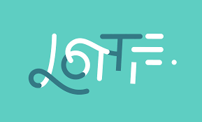

반응형 포트폴리오
관심 기술
-

Lottie.js
모든 웹사이트를 위한 강력한 웹 플레이어
https://lottiefiles.com/
-

git.js
빠르고 효율적으로 처리하도록 설계된 무료 오픈 소스 분산 버전 제어 시스템
https://git-scm.com/
-

amCharts.js
간단하면서도 강력하고 유연한 드롭인 데이터 시각화 챠트 솔루션.
https://www.amcharts.com/javascript-charts/
-

sass-lang
Sass는 햄튼 캐틀린이 설계하고 나탈리 바이첸바움이 개발한 CSS 전처리 도구
https://sass-lang.com/